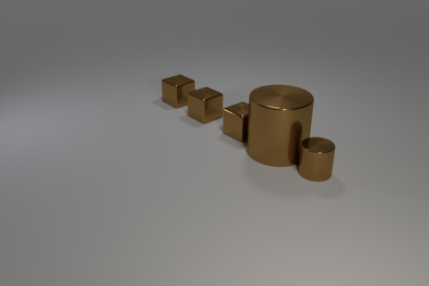
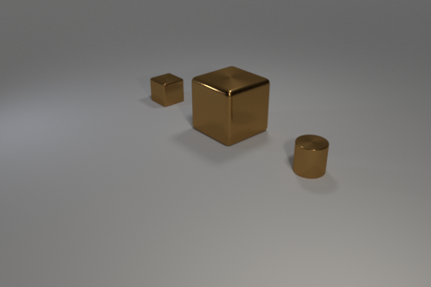
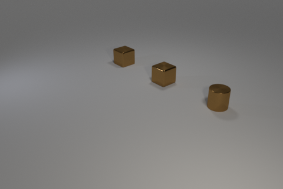
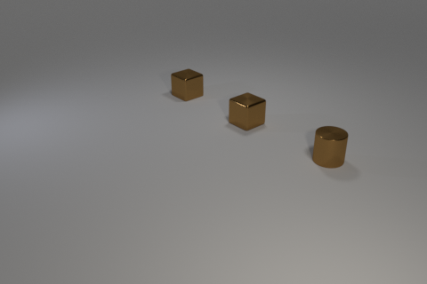
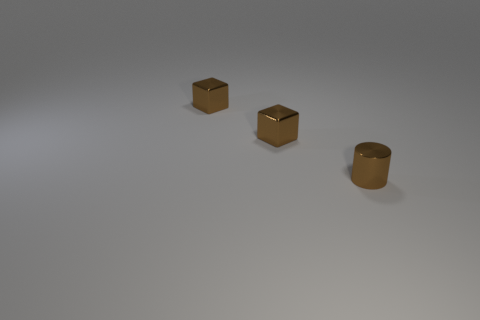
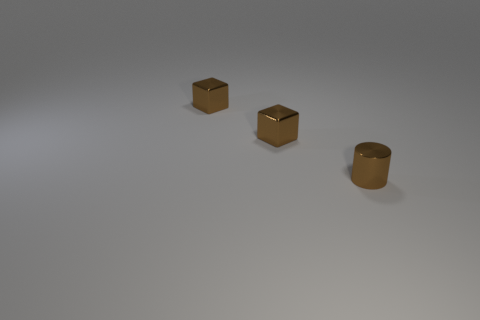

 


Train:

Candidates: 0, 1, 2
Intended concept: The rightmost object is a small cylinder.
Solution provided by tool:
Our tool chose candidate 0.
The discriminator given was: Forall q0: cube!0. Exists q1: cylinder!1. And(left!0!1 small!1)
The neural baseline model chose candidate 1